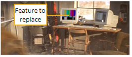
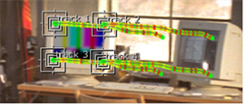
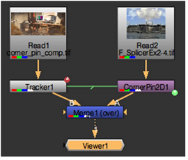

CornerPin2D 节点设计用于将图像序列的四个角映射到从跟踪数据得出的位置。实际上，此节点允许您用另一个图像序列替换任何四角特征。例如，假设您需要替换下面显示的快速平移快照中的监视器图像。
|
 |
|
快速平移镜头需要四个角
跟踪。 |
首先，使用跟踪器计算四个单独的轨迹，每个轨迹对应于特征的每个角。
|
 |
| 生成四个轨道。 |
接下来，将 CornerPin2D 节点附加到要用作特征替换的图像序列，并应用跟踪数据。随着时间的推移，这将图像序列的角重新映射到正确的位置。您可以手动创建节点，或者使用跟踪器 出口 下拉列表。
最后一步是将结果分层到原始元素上。
|
|
| 合成图像。 |
下面的步骤总结了跟踪器的使用 导出 CornerPin2D 工作流。
| 1。 | 在需要替换的功能上生成四个轨道，每个角一个。 |
| 2. | 使用当前帧或 参考框架 用于指定用作起点的帧的字段。你也可以决定是否 CornerPin2D 节点的表达与或烘焙用 出口 下拉列表: |
• CornerPin2D (使用当前帧)
• CornerPin2D (使用变换参考帧)
• CornerPin2D (使用当前帧，烘焙)
• CornerPin2D (使用变换参考帧，烘焙)
| 3. | 单击 创建 将 CornerPin2D 节点添加到脚本中。 |
| 4. | 将图像或序列附加到 CornerPin2D 节点的输入以替换跟踪的特征。 |
| 5. | 如有必要，请从 过滤器 下拉菜单。请参阅 选择过滤算法 欲了解更多信息。 |
| 6. | 当过滤时 钥匙 , 西蒙 ,或 Rifmen 过滤器，您可能会看到这些过滤器使用的像素锐化造成的光晕效应。如有必要，请检查 夹子 来纠正这个问题。 |
| 7. | 在大多数情况下，你会继续 黑色外面 检查过了这将在图像边界之外渲染黑色像素，使元素更容易在另一个元素上分层。(如果取消选中此参数，外部区域将用图像序列的最外层像素填充。) |
| 8。 | 最后一步是将结果分层到原始元素上。 |
一个简单的脚本可能如下所示:

|
|